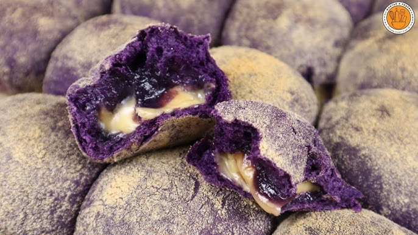

Ube Cheese Pandesal Recipe

Jeanelle's recipe of the yummy ube pandesal bread with a creamy cheese filling.
Source: Link
Ingredients
- 3 1/2 cups flour
- 3 tsp instant yeast
- 1/2 cup sugar
- 1 1/2 tsp salt
- 2 eggs
- 1 cup milk
- 3 tbsp butter, room temperature
- 3 tsp ube extract
- 1/4 medium roll of a semi-soft cheese, preferably gouda
- 1 medium bowl of bread crumbs
Steps
- In mixer combine flour, sugar, instant yeast, and salt. Mix thoroughly.
- In a separate bowl whisk eggs and then add to the dry mixture.
- Set stand mixer to low speed. Slowly add milk until the all the flour has been
picked up. You may need more or less milk.
- Add in butter and ube extract.
- In medium speed, knead the dough in the mixer for 10-15 min.
Test the dough periodically with the windowpane test.
- Once the test passes, cover the dough with plastic wrap and let rise until double in size.
- Place dough on a clean and floured surface and press out air.
- Divide dough into 16 equal rounded pieces.
- Flatten dough and place a piece of cheese in the middle. Stretch the dough over the cheese and
pinch together to seal in. Repeat for the rest of the dough.
- Roll pieces of dough in a bowl of bread crumbs.
- Lay out the bread on a baking sheet, cover with plastic, and let rest for 30-40 min.
- Pre-heat the oven for 350°F.
- Bake bread for 25-30 min.
- Let cool for 10 min before enjoying.